EditorialUI · Implementation
Six form primitives — text inputs, password capture, checkbox, radio group, switch, and the composition primitive that wraps arbitrary controls in the same label / hint / error shell.
apostlerisk. Assumes Bundle 1 is already merged; includes deps, prop-shape diffs vs ProdicusUI, and per-component success checks.
open ↗
Single-line text input bundled with label + hint/error. Sizes sm/md/lg, mono variant for IDs/paths, prefix/suffix adornments, readonly + error states. Auto ARIA wiring.
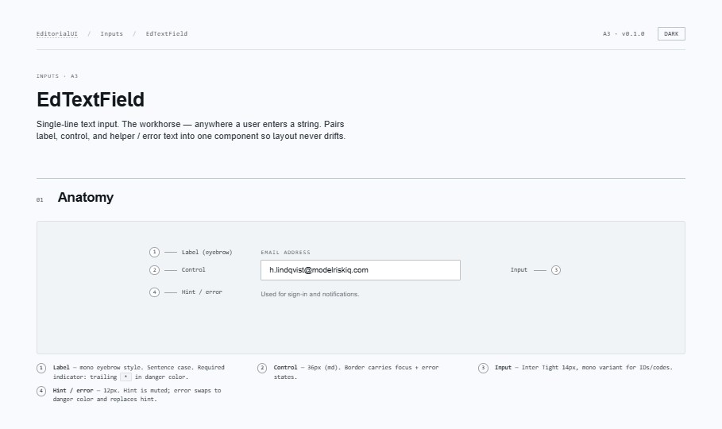
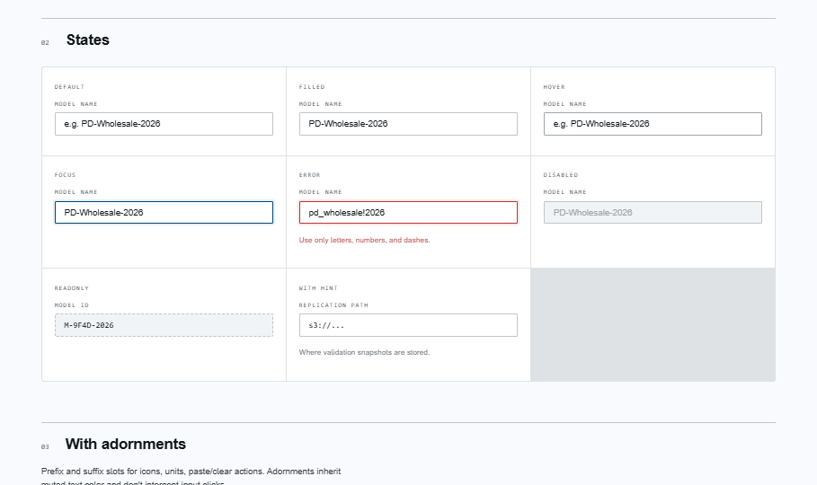
EdTextField specialised for passwords. Opt-in revealable toggle (auto-masks on blur + after 30s). Optional strength meter with role="progressbar" — caller computes the band, server-side policy remains source of truth.
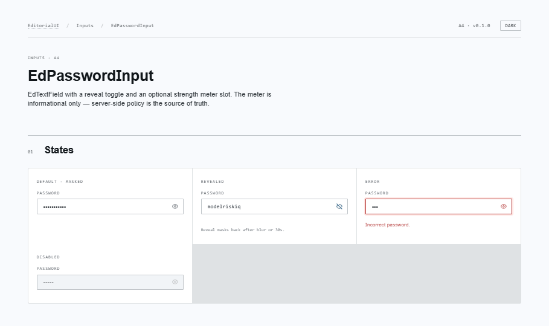
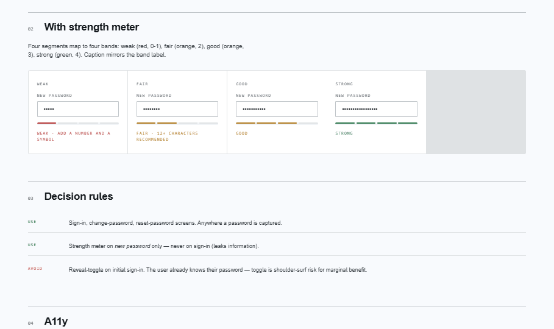
Multi-select / consent / table-row toggle. Three states (unchecked, checked, indeterminate → aria-checked="mixed"). Optional description for consent rows. Wraps Radix Checkbox.
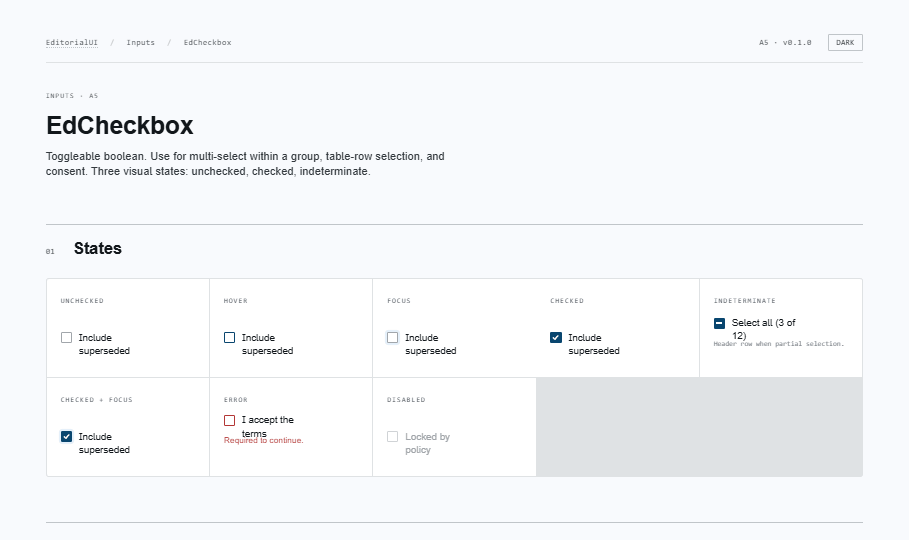
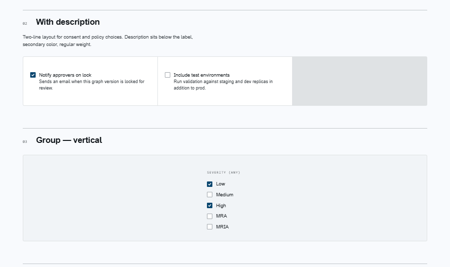
2–5 mutually-exclusive options. Vertical (default) or horizontal layout, optional per-item descriptions. Arrow-key nav + roving tabindex from Radix. EdRadio only exists inside EdRadioGroup.
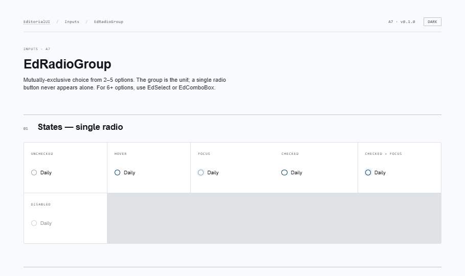
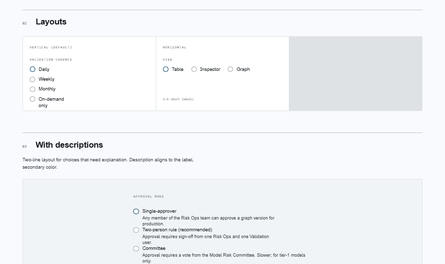
Boolean toggle for settings that take effect immediately. inline or row layout. loading renders an inline "saving…" tag for optimistic-update flows. Reads as state-of-the-world, never as a selection.
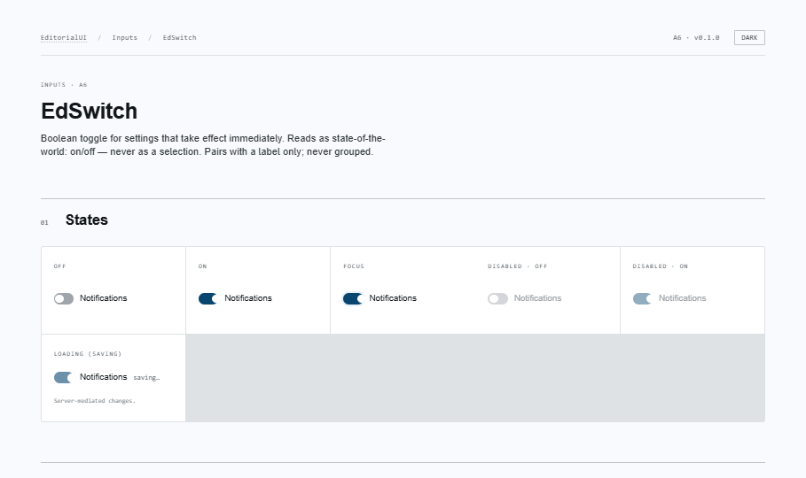
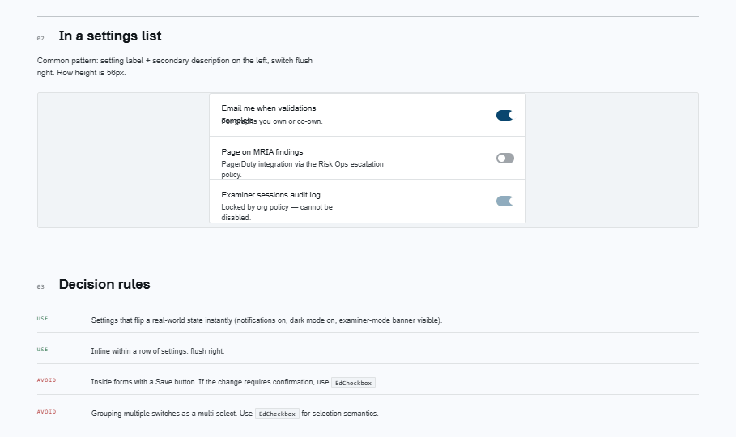
Composition primitive — wraps any control with consistent label + hint/error layout. Single-child clone OR render-prop slot. Stack and row layouts. Use when EdTextField doesn't fit.
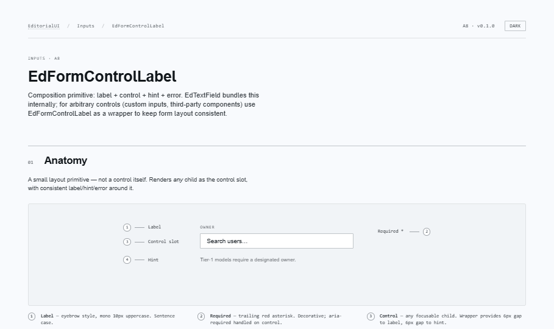
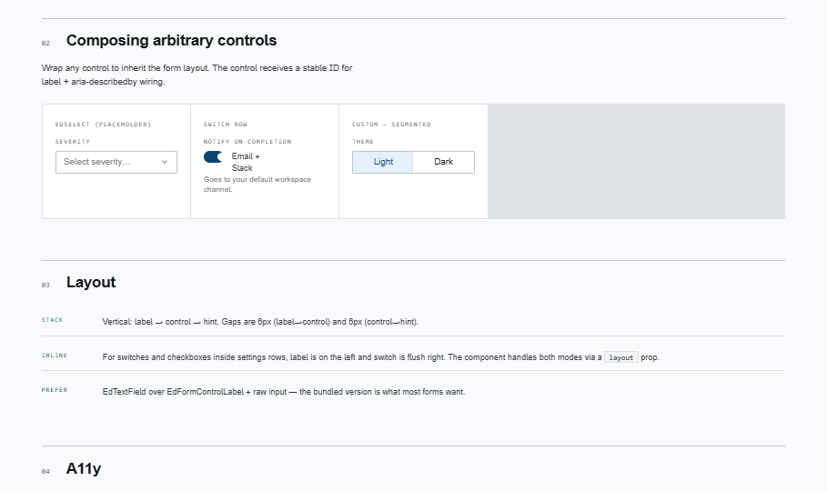
@radix-ui/react-checkboxEdCheckbox@radix-ui/react-radio-groupEdRadioGroup, EdRadio@radix-ui/react-switchEdSwitch
EdTextField, EdPasswordInput, and EdFormControlLabel wrap native inputs + Bundle-1's EdIcon/EdIconButton — no new deps.
error replaces hintMutually exclusive — matches the spec's decision rule. Components render only one at a time.id, set htmlFor, build aria-describedby, flip aria-invalid / aria-required. Callers pass error="…".* is decorative CSS; the semantic signal is aria-required. Never put "(required)" in helper text.EdCheckbox. Switches flip state-of-the-world instantly.EdSelect, EdComboBox, EdAutocomplete.
These build on EdFormControlLabel and reuse the popover patterns
introduced by Radix in this bundle's checkbox-via-Popper interactions.